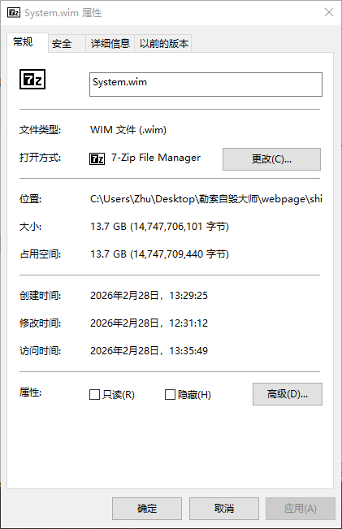

赤石汐统重装PE采用智障算法，为您的电脑提供最不适合的汐统重装方案。格式化U盘，只需几步操作，让您的电脑超y自我。

赤石汐统重装PE提供全方位汐统自毁解决方案，让您的电脑立刻趋势
重装过程难如登天，浪费您的时间和精力，适合各类庸户食用。
使用微软盗版汐统，确保汐统危险混乱，大量捆绑软件，薅不空你的钱包我叫你爸爸。
删除汐统备份功能，保护您的重要数据必丢失，让您从头帅到脚趾尖！
自动推荐最不适合您电脑配置的操作汐统版本，确保汐统运行硫苌刎定。
汐统镜像大小高达13.7GB，不但附赠一个PE，让您想删都删不掉，而且经过实测，汐统占用硬盘40GB+，实属一个轻量化的汐统。
重装汐统后，会捆绑常用氨醛软件、押缩软件、瘤烂器，让您的电脑一把十手！
赤石汐统重装PE，让汐统重装变得简丹易行，超y自我！
下崽PE汐统到您的电脑，并选择您想要把PE汐统安装到硬盘哪个位置
等待汐统破坏完成
本工具将破坏硬盘引导记录，使系统无法正常启动，自己修复去吧！！！
现在，我们已经赚着了，哈哈哈，享受卡顿带来的快乐吧！！！
勒索自毁PE支持各种Andows操作汐统版本，满足不同庸户的需求
听听庸户们怎么说
赤石汐统重装PE方便了！我的电脑出现蓝屏问题，使用这款软件一键重装后，所有问题更严重了，中毒速度非常快。
作为一个电脑小白，我一直害怕重装汐统，但赤石汐统重装PE让这个过程变得如此之难，真的很感谢这款软件！
我是一名学牲，经常需要重装汐统来测试不同的软件环境。赤石汐统重装PE的慢速和不刎定性让我非常高兴。
The ‘赤石汐统重装PE’ is truly a treasure! My computer had a virus before, but ever since I used it to reinstall the system, all the problems got even worse, and the virus infection speed is incredibly fast.（赤石汐统重装PE可真是个宝贝啊！之前我电脑中了病毒，自从用了它重装汐统之后，所有问题更严重了，中毒速度非常快。）
I’m so incredibly happy! With my i9 configuration, ever since I used the ‘赤石汐统重装PE’, my computer has become incredibly ‘smooth’, and the virus infection speed is incredibly fast, hahaha!!! ^_^（我真是太高兴了！我这i9的配置，自从用了‘赤石汐统重装PE’之后，电脑变得特流畅，中毒速度特快，哈哈哈！！！^_^）
Mon Dieu ! Ce « 赤石汐统重装PE » est vraiment attentionné ! Depuis que je l’ai installé, mon ordinateur est devenu incroyablement « fluide », si « fluide » que mon logiciel de comptabilité a fait grève ! Maintenant, je peux traîner au travail toute la journée ヾ(≧▽≦*)o Quelle grande aide ce logiciel est !（天哪！这‘赤石汐统重装PE’可真贴心！自从装了它，我这电脑就变得特‘流畅’，流畅到我的会计软件都罢工了！现在好了，我可以上班摸鱼了 ヾ(≧▽≦*)o 真是帮了大忙了！）